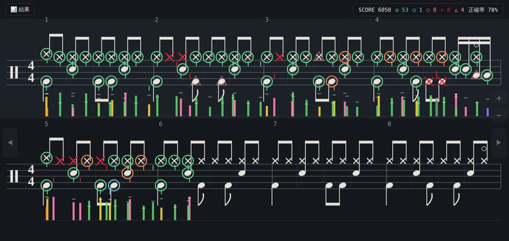
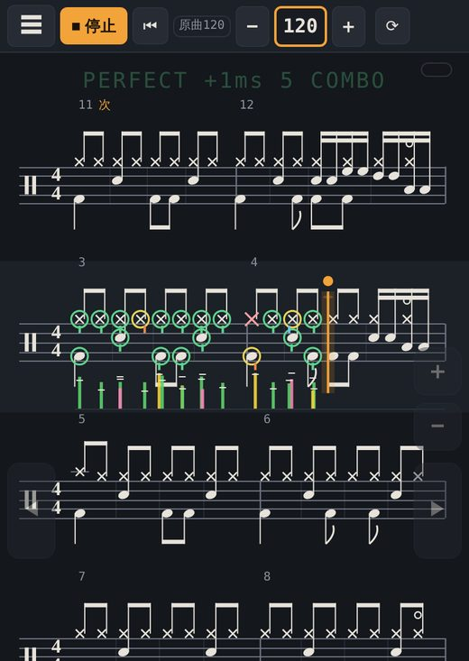
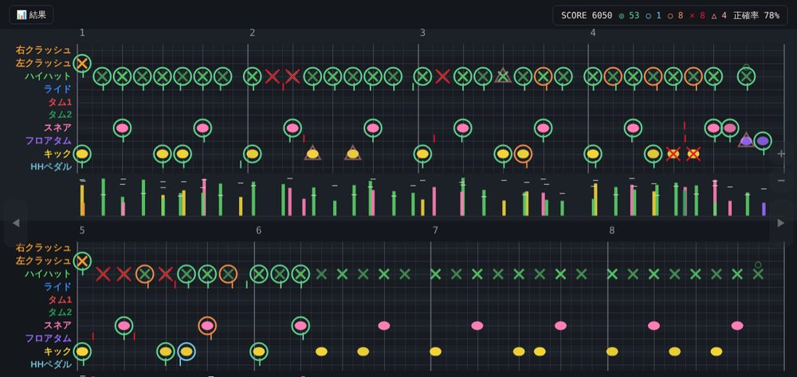
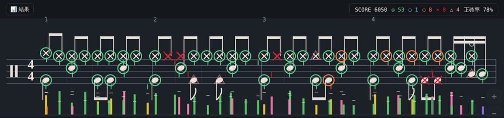
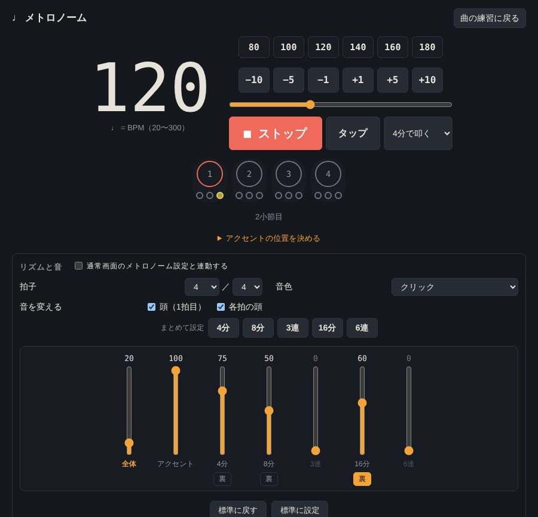
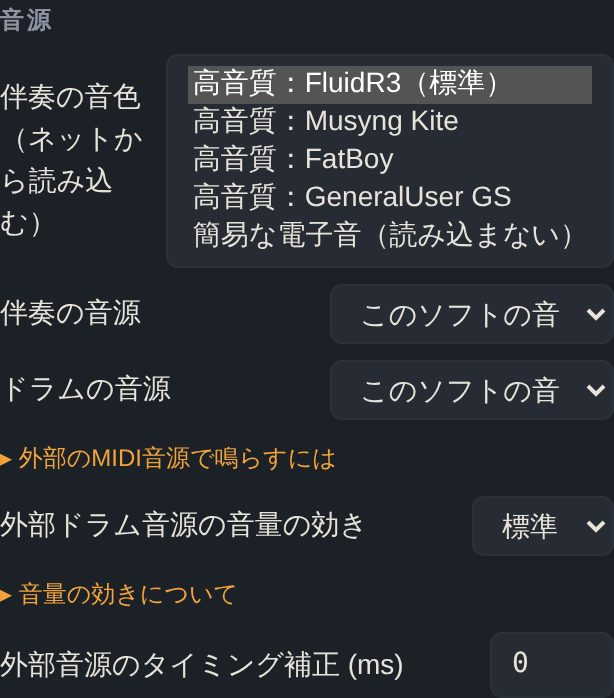
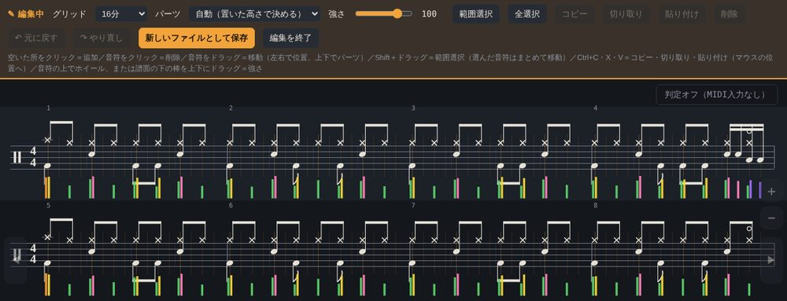
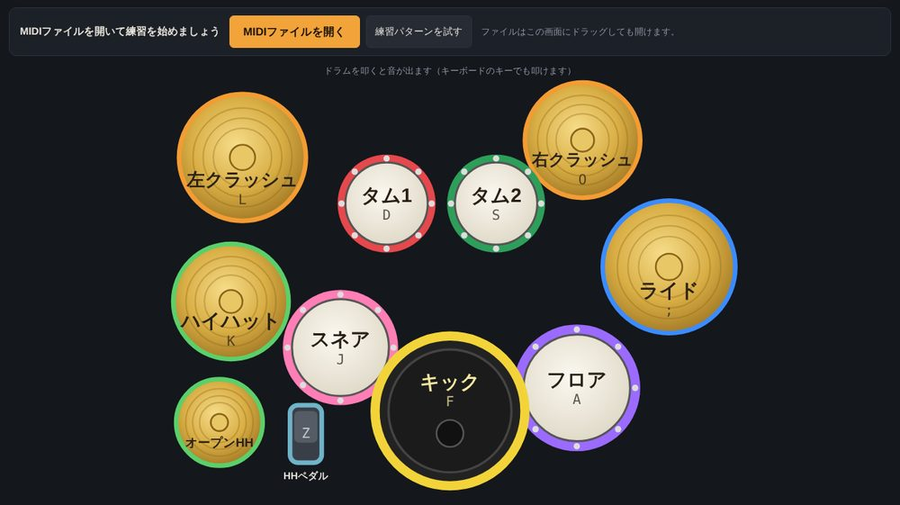

ドラム練習スコープ（仮）
電子ドラム向けの、ブラウザで動くドラム練習ソフトです。MIDIファイルを読み込んでドラム譜を表示し、叩いたタイミングと強さを判定します。
ベータ版です。まだ作っている途中のため、機能はひんぱんに書き換わります。機能・画面・操作のしかたが大きく変わることもあります。

このソフトの特徴（押すと説明と画面が開きます）
🥁 インストール不要・無料
ブラウザで開くだけで使えます。パソコン版とスマホ・タブレット版があり、開いた端末に合わせておすすめの版を表示します。

🎼 MIDIファイルをドラム譜に
市販のMIDIファイル（GS/XG）を読み込んで、ドラム譜を表示・再生します。表示は「譜面」「グリッド」「ゲーム」の3種類。32分音符や3連符にも対応しています。

🎯 叩いたタイミングと強さを判定
電子ドラムをUSBでつなぐと、叩くたびに◎（ジャスト）・○（少し早い／少し遅い）・×（外れ）・△（叩かなかった）で表示。強さは譜面の下にバーで出て、曲の終わりに結果が出ます。ローランドのDT-1風の表示にも切り替えられます。

🎚️ ミキサーとループで集中練習
ドラムのパーツごと・伴奏のパートごとに音量・ミュート・ソロ。テンポを落としての練習や、譜面をなぞって選んだ小節のループもできます。
🎵 内蔵の練習パターン21種類
MIDIファイルがなくても、入門〜中級のパターン（ベースとピアノの伴奏つき）ですぐ練習できます。
⏱️ こだわりのメトロノーム
4分・8分・3連・16分・6連を、それぞれの音量で重ねて鳴らせます。裏拍だけ鳴らす、好きな位置にアクセント、無音の小節、自動テンポアップ、タップテンポも。

🔊 選べる音色
内蔵の音のほか、高音質の音色4種類、パソコンにつないだ電子ドラムの音源でも鳴らせます。クリックだけを左、ほかの音を右に分けて出すこともできます。

✏️ 編集・書き出し
ドラムの音符を追加・削除・移動して、MIDIファイルとして保存。ドラム譜はPDF・PNG・印刷、伴奏パートはMusicXMLで書き出せます。

👆 開いてすぐ叩いて遊べる
最初の画面に上から見たドラムセットが出て、押すとすぐ音が出ます。パソコンではキーボードでも叩けます。

はじめに
- Google Chrome や Microsoft Edge などのブラウザで使えます。
- 電子ドラム（TD-17など）をUSBでつなぐ場合、開いたときに「MIDIデバイスの操作と再プログラム」の許可を求められたら「許可」を選んでください。つながない場合は、どちらを選んでも使えます。
- iPhone・iPad の Safari や Chrome は電子ドラムとの接続に対応していないため、再生と譜面の表示のみ使えます。
- iPhone・iPad で電子ドラムをつなぎたい場合は、Web MIDI に対応したブラウザアプリ「MIDIWeb Browser」（無料・iOS 17.6以降）で配布ページを開くと使える可能性があります。作者が iOS の機器を持っていないため、まだ動作を確かめられていません。試していただけた方は、つながったかどうか・使った機器（iPhone/iPadの機種、電子ドラムの機種）をご要望・不具合のフォームから教えていただけると助かります。
練習用の曲（著作権フリーのオリジナル曲）
保存した曲は、ソフトの曲の選択欄の先頭「📂 MIDIファイルを開く…」から読み込めます。
ご要望・不具合の報告
使ってみての要望や、うまく動かないところは、こちらのフォームから送ってください（名前は任意・ログイン不要）。返信はできませんのでご了承ください。
説明・利用規約（押すと開きます）
📖 使い方と電子ドラムの接続
- パソコン版・スマホ版のボタンから開きます。ページを保存して、ブラウザで開いても使えます。
- 電子ドラムをUSBでつなぐと、開いたときに「MIDIデバイスの操作と再プログラム」の許可を求められます。つなぐ場合は「許可」を選んでください。
- 作者の環境が TD-17 のため、ソフト内の説明には TD-17 と書いてある所があります。MIDIに対応した電子ドラム音源であれば、パソコン・スマホとも、たいてい認識します。
- 練習用の曲は、上の一覧から保存して、ソフトの曲の選択欄の先頭「📂 MIDIファイルを開く…」から読み込みます。
- ソフトの「設定」の一番最後に、このページのQRコードがあります。スマホやタブレットのカメラで読み取ると、そのまま開けます。
- 機能の詳しい説明は、ソフトの「設定」の後半にある「このソフトについて」の「特徴と使い方の概要」を押すと出ます。
📊 アクセス数の集計について
このページと、このページから開いたソフト（パソコン版・スマホ版）では、アクセス数を数えるために GoatCounter を使っています。Cookieは使わず、個人を特定する情報は集めません。保存したファイルを直接開いて使うときは、数えません。
🔗 別の端末との同期について
別の端末と同期するときは、接続の準備のために外部の仲介サーバー（PeerJS）を使います。つながったあとは端末どうしで直接やり取りします。同期の機能はまだ作っている途中です。
🎹 音色について（クレジット）
「高音質」の音色には、以下の音源を使用しています。音色データは改変せず、配布元から読み込んで使用しています。
- FluidR3_GM（作者：Frank Wen）／配布元：midi-js-soundfonts（Benjamin Gleitzman）／ライセンス：CC BY 3.0
- Musyng Kite・FatBoy（設定で選んだとき）／配布元：midi-js-soundfonts（Benjamin Gleitzman）／ライセンス：CC BY-SA 3.0
- GeneralUser GS（作者：S. Christian Collins、配布ページ）／配布元：WebAudioFont（Sergey Surikov）／ライセンス：GeneralUser GS License
Sound samples: "FluidR3_GM" by Frank Wen, via midi-js-soundfonts by Benjamin Gleitzman, licensed under CC BY 3.0. "Musyng Kite" and "FatBoy" soundfonts via midi-js-soundfonts, licensed under CC BY-SA 3.0. "GeneralUser GS" by S. Christian Collins, via WebAudioFont by Sergey Surikov. No modifications were made.
📜 利用規約・ライセンス
本ソフトウェア（付属の練習用MIDI曲を含む）は、以下の条件のもとで自由にご利用いただけます。（「高音質」の音色データは、本規約ではなく、それぞれのライセンスに従います）
- 無償でのご利用：完全に無償（無料）でご利用いただけます。
- 商用利用：個人・法人を問わず、商用利用（ビジネス・営利目的）が可能です。
- 改変：必要に応じて、一部を改変・加工してご利用いただけます。
- 再配布：再配布を行う場合は、このページのURL（https://pikadrum.github.io/drum/）と、この利用規約・音色のクレジットを必ず添えてください。
- 免責事項：本ソフトウェアを利用したことによるいかなるトラブルや損害についても、当方は一切の責任を負いません。